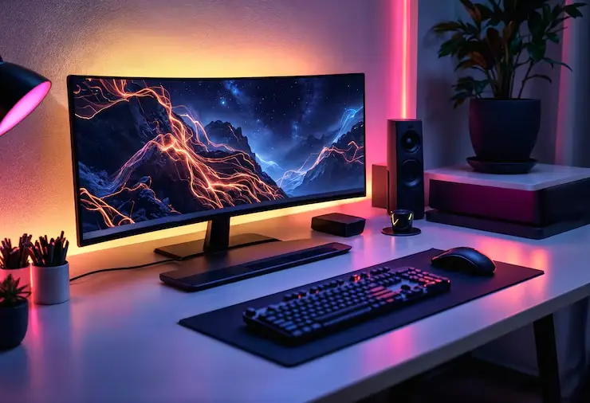

Into Digital Reality
About Me I build websites that work well and look great.
I'm a front-end web developer from the Philippines with years of experience working on websites and web projects. I enjoy building websites, solving technical problems, and finding simple ways to make things work better.
-
Responsive Design
Build websites that look great on any device.
-
Clean Code
Write scalable and maintainable code.
-
Performance Focused
Optimize websites for speed and performance.
My Background
I started learning web development because I was curious about how websites work. Over the years, that curiosity grew into a career that I enjoy.
With 9+ years of experience, I've worked on different projects, from websites to front-end interfaces for systems and other digital applications. I've had the opportunity to work with different teams, clients, and project requirements throughout my career.
My Experience
I've worked with clients and teams from the Philippines, United States and Japan, which gave me experience working with different requirements, workflows, and expectations.
I've also had experience leading and supporting developers, coordinating tasks, troubleshooting technical issues, maintaining projects, and working closely with designers and other team members.
My Skills
My main skills include HTML, CSS, JavaScript, jQuery, SCSS, WordPress, and PHP. I focus on responsive design, clean code, and creating customized front-end solutions.
I enjoy turning designs into functional interfaces while paying attention to details such as layout, responsiveness, browser compatibility, and overall user experience.
Always Learning
I'm always open to learning new tools and technologies and finding better ways to solve problems. Technology continues to change, so I believe there's always something new to learn.
For me, development is not just about writing code. It's also about understanding the problem, finding a practical solution, and creating something that works well for the people who use it.
Company Projects Projects I've Worked On
A selection of company websites and digital projects I contributed
to as part of my role.
These are not personal projects, but examples of work completed for
the companies and clients I've worked with.
Services What I Can Do For You
Creating responsive, modern, and maintainable websites that deliver great user experiences.
-
Responsive Web Development
Websites that work smoothly across mobile, tablet, and desktop devices.
-
Front-End Development
Building responsive and interactive interfaces for websites, e-commerce platforms, and web-based systems.
-
Landing Page & Website Development
High-converting landing pages and modern, functional websites built from designs or from scratch.
-
UI Implementation
Turning Figma, Adobe XD, or other designs into pixel-accurate web interfaces.
-
Website Redesign & Optimization
Modernizing outdated sites and improving loading speed, Core Web Vitals, and overall performance.
-
Cross-Browser & API Integration
Ensuring consistent front-end experiences across major browsers while integrating website features, forms, and external services as needed.
-
E-commerce Front End
Building product pages, shopping interfaces, carts, checkout experiences, and storefronts.
-
SEO-Friendly Development
Clean, semantic, crawlable websites with proper technical foundations and UI/UX improvements.
-
Animations, Bug Fixes & Maintenance
Polished animations and transitions, plus ongoing fixes and maintenance for existing websites.
Work Experiences My Professional Journey
A timeline of work experience and the companies
I've had the pleasure to work with.
-
August 2024 - May 2026
Glats Front-End Developer
1+ year- Maintained and enhanced the company's websites
- Developed landing pages based on design and project requirements
- Updated and customized WordPress content and functionalities
- Identified and resolved front-end bugs and website issues
- Tested websites across different browsers and devices for compatibility
- Implemented responsive layouts and front-end improvements
- Collaborated with designers, developers, and other teams to deliver website updates
-
October 2020 - August 2024
Infinite Points Philippines Front-End Developer
3+ years- Built websites from scratch using HTML, CSS or SASS, JavaScript, and jQuery.
- Developed responsive websites and converted designs into WordPress.
- Created landing pages and custom front-end interfaces.
- Developed front-end interfaces for web-based systems in collaboration with back-end developers.
- Maintained websites and updated content, features, and functionalities.
- Collaborated with designers, developers, and other team members to deliver project requirements.
- Conducted team sessions on new SASS templates and best practices.
- Assisted teammates with their tasks whenever needed.
- Managed development workflow using Git.
-
June 2016 - October 2020
Proweaver Inc.
4+ yearsTeam Lead
- Led in-house and outsourced development teams.
- Delegated tasks based on skills, workload, and project needs.
- Trained and mentored developers on workflows and coding practices.
- Conducted code reviews to maintain quality and consistency.
- Coordinated project requirements and development tasks.
- Monitored team progress and provided technical support.
Front-End Developer
- Developed responsive websites using HTML, CSS, JavaScript, and jQuery.
- Converted designs into functional and responsive websites.
- Built and customized WordPress websites.
- Collaborated with designers, back-end developers and SEO specialist.
- Resolved front-end issues and maintained website quality.
SEO & Social Media Specialist
- Managed on-page and off-page SEO activities.
- Conducted keyword research and optimized website content.
- Monitored performance using Google Analytics and Search Console.
- Managed social media accounts and content.
- Planned and scheduled social media posts.
- Managed multiple client accounts while maintaining quality.
-
June 2013 - March 2016
Gaisano Grand Mall Graphic Designer
2+ years- Designed marketing materials such as flyers, tarpaulins, signage, billboards, and catalogues using Adobe Photoshop, Illustrator, and Google SketchUp.
- Maintained brand consistency and collaborated with the marketing team to ensure effective promotional strategies.
- Managed multiple projects simultaneously, meeting tight deadlines with creativity and attention to detail.
Skills & Technologies Tools I Work With
A collection of technologies, tools, and skills I use to build responsive, functional, and user-friendly websites.
Front-End Development
- HTML5
- CSS3
- SCSS
- JavaScript
- jQuery
- Responsive Design
CMS & Platforms
- WordPress
- ACF
- Elementor
- PHP
- Custom CSS
Tools & Workflow
- Git / GitHub
- Bitbucket
- SourceTree
- VS Code
- Figma
- Adobe XD
Other Skills
- Cross-Browser Testing
- Website Optimization
- SEO-Friendly Development
- Website Maintenance
Why Work With Me What I Bring To The Table
I bring hands-on experience, attention to detail, and a practical approach to every project.
Hands-on experience building, maintaining, and improving websites, landing pages, WordPress sites, and front-end interfaces for web-based systems.
I pay attention to design, layout, responsiveness, browser compatibility, and small details that improve the overall user experience.
I troubleshoot front-end issues, find the cause of problems, and look for practical solutions to keep projects moving.
I work well with designers, developers, and other team members and communicate clearly to complete project requirements.
I have experience assigning tasks, supporting teammates, sharing knowledge, and helping teams complete projects.
I'm open to learning new tools, technologies, and better ways to solve problems and improve my work.